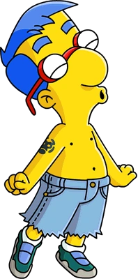
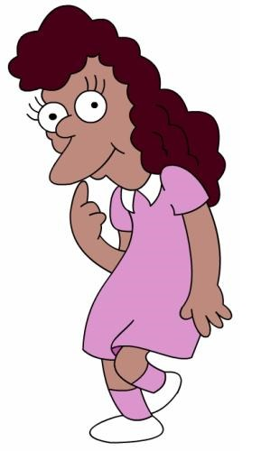
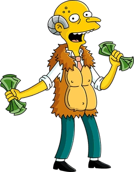

Biography of favorite characters

The series is a satirical depiction of American life, epitomized by the Simpson family, which consists of Homer, Marge, Bart, Lisa, and Maggie. The show is set in the fictional town of Springfield and parodies American culture and society, television, and the human condition. The series is a satirical depiction of American life, epitomized by the Simpson family, which consists of Homer, Marge, Bart, Lisa, and Maggie. The show is set in the fictional town of Springfield and parodies American culture and society, television, and the human condition.
Krusty the Clown
Krusty has Jewish parents and lived with his father in the Jewish community. As a rabbi, his father heavily criticized his son's career choice as a comedian. Keeping his entertainment lifestyle a secret, Krusty continued his role as a comedian until the day when his father came to one of his shows and a rowdy rabbi sprayed the makeup off his face. After this event, his father stopped talking to him, and they didn't make contact until many years later with Bart and Lisa Simpson. Although ethnically Jewish, he generally doesn't want to stress this heritage, to the extent that he prohibits any references to his Jewish background on his show. Krusty, without his makeup, bears an uncanny physical resemblance to Homer Simpson. However, there are also differences such as his cow-skull birthmark and small feet. Krusty, like Homer, has apparently faced heart problems in the past as he currently has a pacemaker, which has since permanently made his face white. He also seems to be disturbed at even the mere mention of someone having an affair, as when Homer tells Krusty the Clown that Apu was cheating on Manjula (due to his thinking he would joke about it), he reacted quite differently from how Homer expected by saying in a remorseful tone that it was sad and feeling sorry for all of their kids. Krusty lives in his mansion in the upscale residential area of Springfield Heights, which is also home to mob don Fat Tony and actor Troy McClure.
The main phrases of the character
- “Hey hey, kids!”
- “Hoohoohoohahaha!”
- “Why, you little!”
Milhouse Van Houten
This is a ten year old boy and Bart Simpson's best friend. As the only child of Kirk and Luann Van Houten, Milhouse's most distinctive physical traits are his blue hair, big nose and extreme nearsightedness (depicted by very small eyes), requiring thick glasses to correct. He has regular intelligence but somewhat poor social skills. Although devious in his own way, Milhouse is quite gullible, which is why he is often led into trouble by Bart, who is not shy about taking advantage of the other's naïveté. Milhouse serves as the school president of the Springfield Elementary from 2004 to 2005.
The main phrases of the character
- “Sorry, Bart.”
- “My Glasses!”
- “Whazzup!!!”
Janey Powell
Janey is noted as "Lisa's fair-weather best friend", and this is an accurate description. Though she is often seen hanging out with Lisa, at other times she teases her along with the other children for her misfortunes or idealistic views. (For example, when Lisa first decides to go vegetarian, Janey is one of the first to mock her for it, asking whether Lisa was planning to marry a carrot.) She is not nearly as intelligent or nerdy as Lisa, once blowing a bubble with chewing gum rather than engage in Lisa's current conversation. She has spent the night at the Simpsons's house, and Lisa is seen watching cartoons at her house on numerous occasions. She is also seen reading "The Babysitter Twins" with Lisa. Janey is also seen to be concerned for Lisa's well being, one is evident in Separate Vocations, when a depressed and sulky Lisa attempts to enter the girls's bathroom inhibited by rebellious fifth grade girls. She tries to warn Lisa in vain not to enter it, only for her to ignore Janey and enter the bathroom anyway. Janey may have had a crush on Milhouse Van Houten, who has a crush on Lisa. In The Simpsons Game, she asks Bart where Milhouse is and calls Lisa cruel for leading Milhouse on. She sells cupcakes in school. She also said that Milhouse doesn't like Lisa when other students were mocking them about it, which made the students mock her for liking Milhouse instead. According to The Lisa Book, Janey is considered to be one of the most popular girls in second grade, in a poll that she conducted herself. She is very fashion-conscious, being particularly wary of clothes that look Canadian. She also enjoys the company of other girls, especially when they fawn on her. From Janey's perspective, either you're with her or you have "cooties".
The main phrases of the character
- “Are you going to marry a carrot, Lisa?”
- “With friends like her, who needs acquaintances?”
- “If you pile up all my dolls, it'll reach the moon!”
Charles Montgomery Burns
Charles Montgomery Plantagenet Schicklgruber Burns, also known as Monty Burns, Montgomery Burns, C.M. Burns, and Mr. Burns, is the owner of the Springfield Nuclear Power Plant and the main antagonist of The Simpsons franchise. He is Springfield's richest, oldest, and most powerful citizen. His net worth has been stated to be in the billions and in one instance was pegged at exactly $1,800,037,022. He had, on three occasions, lost his entire fortune, and at another time slipped to "only" $996 million ($996,036,000), leading to his expulsion from Billionaire Camp. Despite his proficiency with firearms, Burns is very elderly and physically frail but employs relentless and ruthless tactics to get whatever he wants. In "Undercover Burns", after a "put your child to work day" at the Nuclear Plant he becomes aware his employees hate him and disguises himself as Fred Kranepool (via a specially made suit and voice change chip) to find out why. Homer, Carl and Lenny were upset after learning their new friend "Fred" was really Mr. Burns. In "Burger Kings", Burns becomes a burger fan and starts a meat - free burger restaurant called X-cell-ent Burger to become a beloved figure. However, this fails because the vegan burgers are made from endangered plants from the Amazon Rainforest.
The main phrases of the character
- “Excellent!”
- “Simpson, eh?”
- “You're fired!”